1
教えた経験がなくても、はじめられる
特別な知識や経験は必要ありません。良質な学びを届けていただくため、開校前に研修で運営と指導のノウハウを身につけていただきます。加盟のご契約前には、書類と面接による審査があります。
M-Lab株式会社
2026年10月時点の情報です。内容は予告なく変更になる場合があります。
当社の許可なく複製・転載・転用・改ざん等による二次利用をすることを禁じます。
←→ キーで1枚ずつ送れます
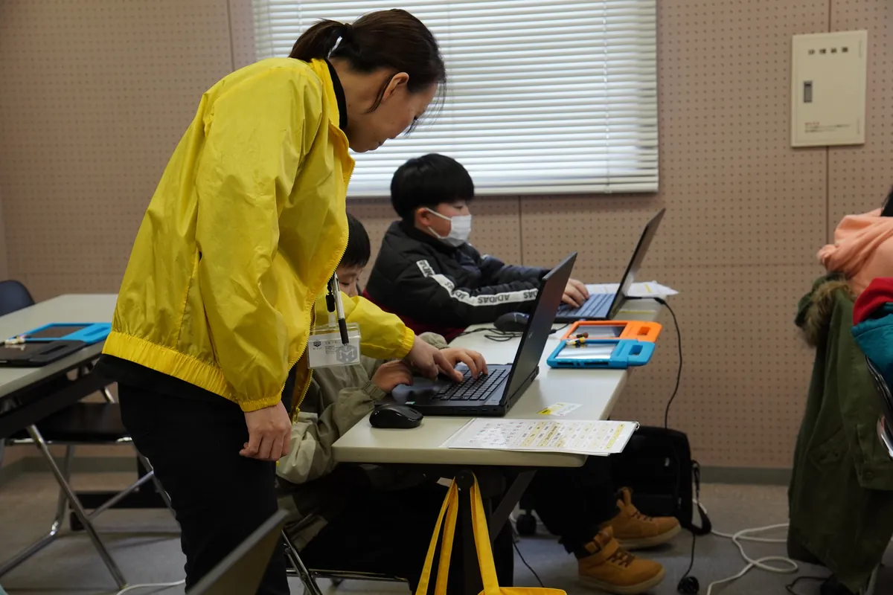
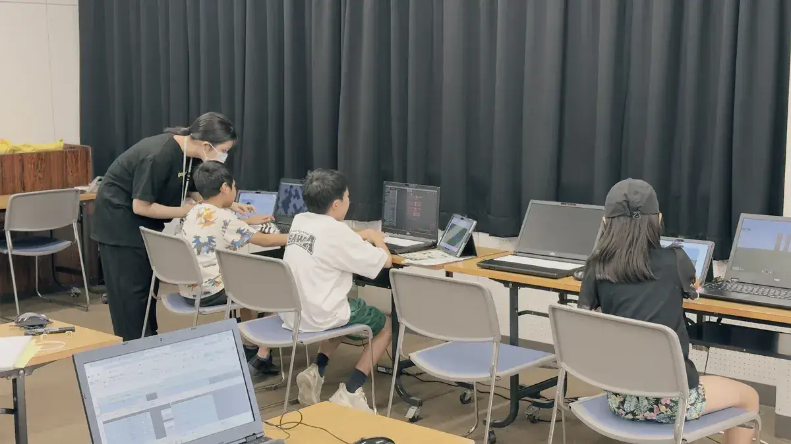
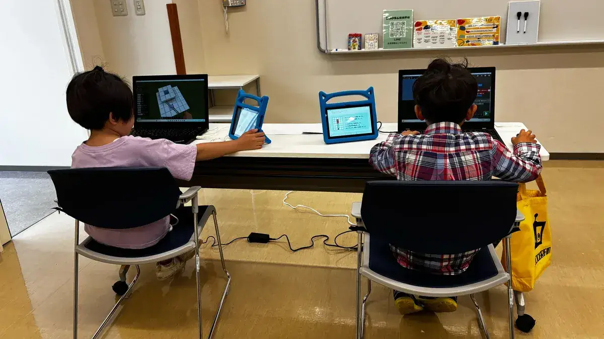
私たちの想い
私たちは、プログラミング学習を通じて、子どもたちの論理的思考力、目の前の課題に向き合い諦めない心、そして自主性を育むことを大切に、プログラミングスクールを運営しています。
一人でも多くの子どもが、日本中どこに暮らしていても質の高い学びを受けられ、未来の可能性を大きく広げてほしい。この想いを実現するため、想いを同じくする皆さまと共に、全国の子どもたちに質の高い学びを届けていくこと。それが私たちの願いです。
1本部の紹介
| 法人名 | M-Lab株式会社 |
|---|---|
| 設立 | 2017年7月 |
| 資本金 | 1億円 |
| 代表者 | 松本 和久 |
| 本社所在地 | 東京都新宿区市谷田町1-19-2 ECS第19ビル4階 |
| 事業内容 | 教育コンテンツ・システムの開発運営 教育関連施設の企画・運営 DX化推進支援 |
主なサービス
1本部の紹介
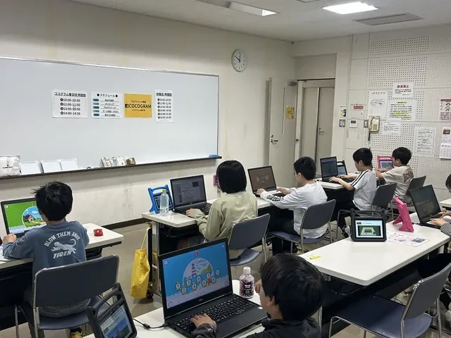
「みらいごとラボ」は、コロナ禍をきっかけに通学型の教室をオンラインに切り替え、約2年で入会者2,000名を超えるオンラインスクールに成長しました。その集客力と教材の魅力、子どもたちが夢中になるカリキュラムと指導のノウハウを全国の校舎で届けるため、2023年に通学型の教室「ココグラム」を開校しました。
2ココグラムについて
ココグラムは、大人気ゲーム「マインクラフト」を使ってプログラミングを学ぶ、通学型の教室です。独自に開発した学習アプリ「スタディクラフト®」をマインクラフトとつなげることで、マインクラフトの世界の中に、プログラミングはもちろん、英語・算数・理科・社会の学びが広がります。
教室で講師から直接指導を受けられるため、低学年のお子さまでも安心して受講できます。
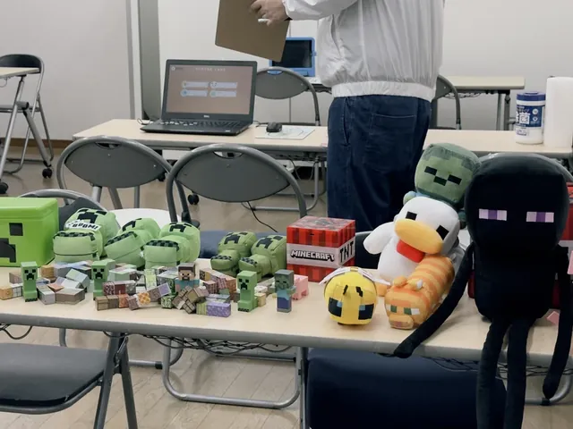
ココグラムで使用している教材およびサービスは、Minecraft公式サービスではありません。Mojangから承認されておらず、Mojangとは関係ありません。
2ココグラムについて
2ココグラムについて
学習アプリとマインクラフトを連携させ、プログラミング・英語・算数・理科・社会を学べる独自の教材です。プログラムの結果がマインクラフトの世界にそのまま形になり、つまずいたときは学習用AI「MAiRO（マイロ）」に質問できます。
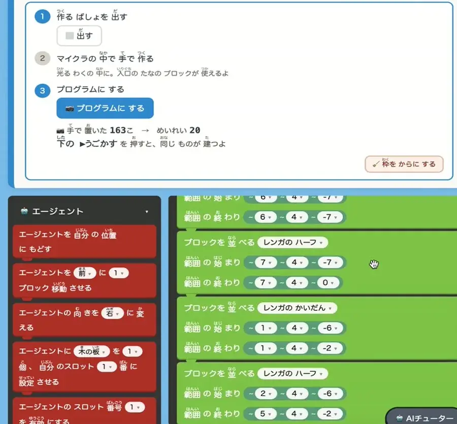
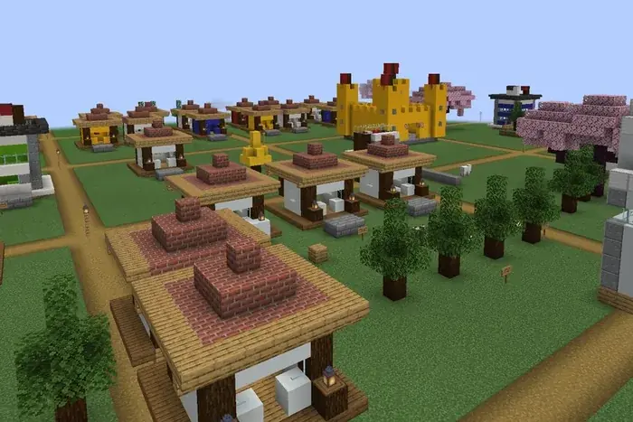
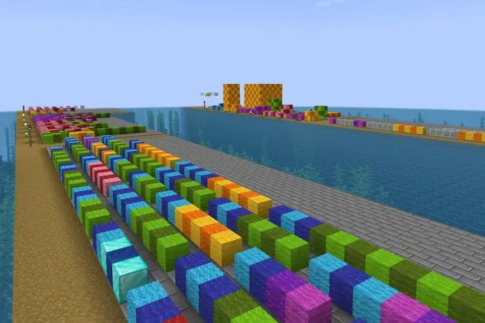
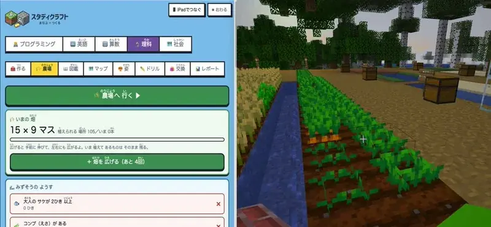
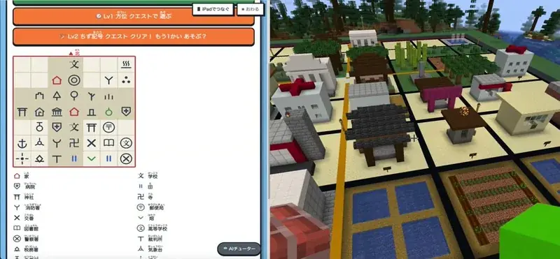
2ココグラムについて
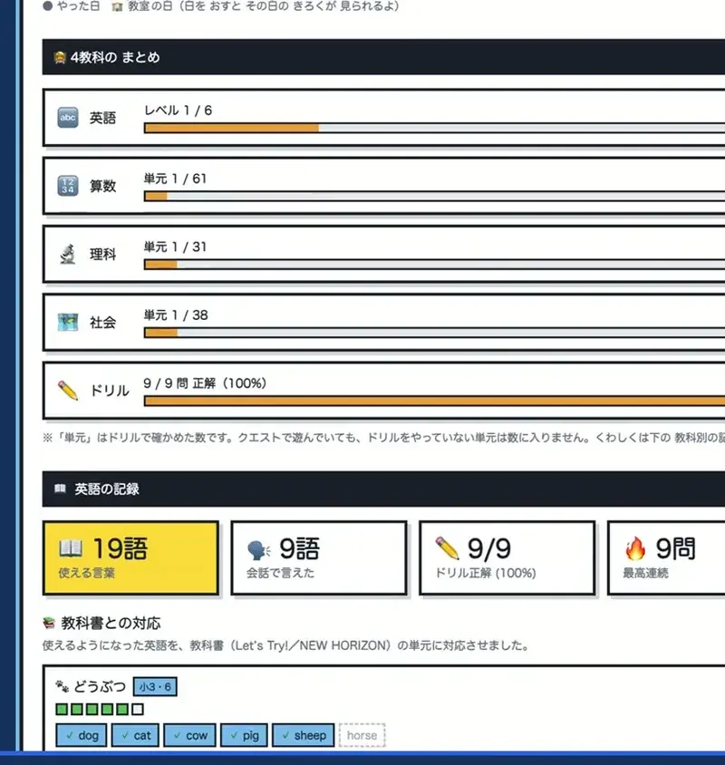
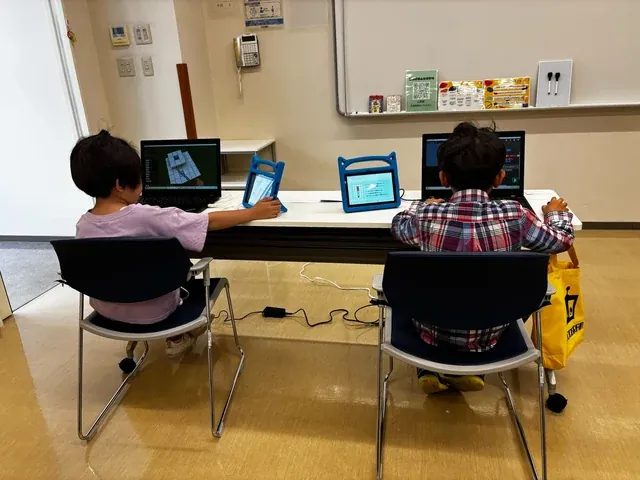
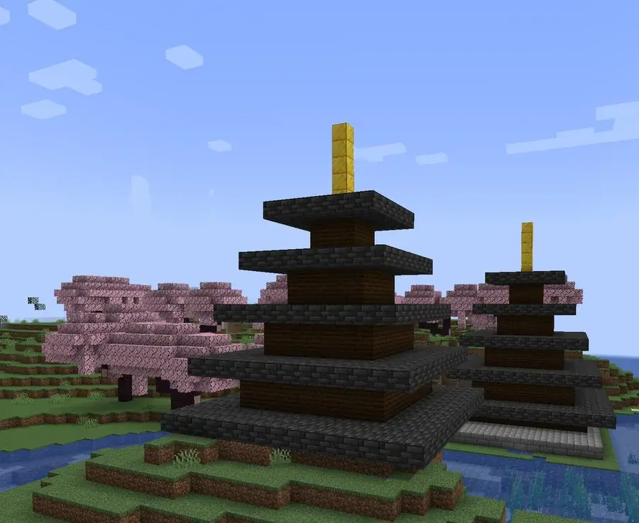
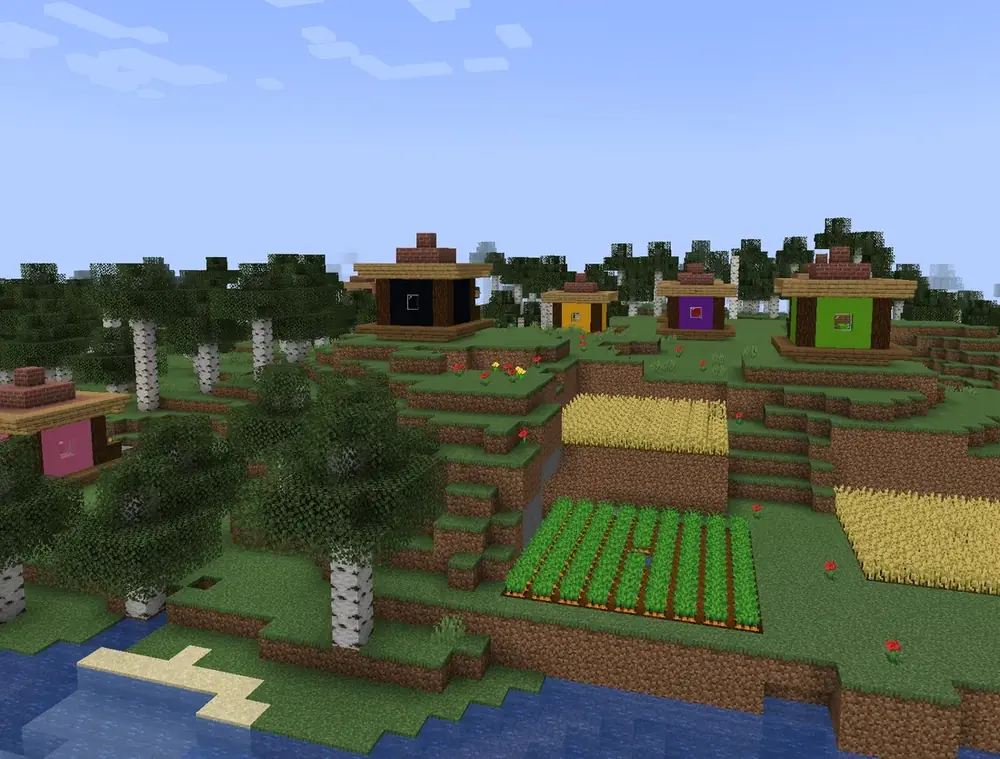
2ココグラムについて
授業は1回50分、月に2回（隔週）です。
| 1 | 2 | 3 | 4 | 5 | |
|---|---|---|---|---|---|
| 土曜日 | 10:00〜10:50 | 11:00〜11:50 | 13:00〜13:50 | 14:00〜14:50 | 15:00〜15:50 |
| 日曜日 | 10:00〜10:50 | 11:00〜11:50 |
3体験会による入会獲得
ココグラムでは、必ず無料の体験会に参加いただき、スクールの内容をお子さまと保護者の方にご理解いただいたうえで入会いただいています。
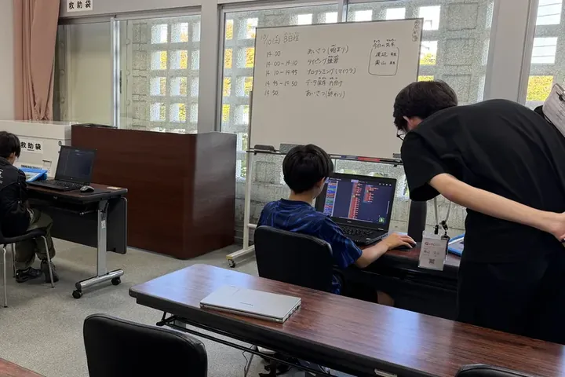
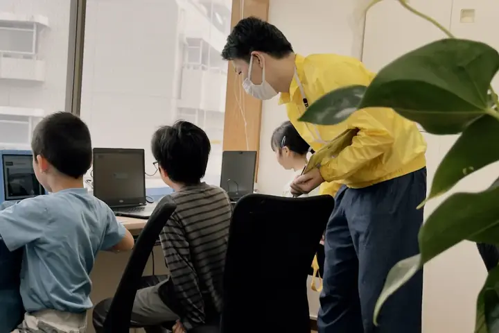
3体験会による入会獲得
学習塾で難しいといわれる集客。魅力的なチラシを効率のよい方法で配布し、地域のご家庭と向き合う校舎の皆さまを、本部がノウハウと実務の両面からサポートします。
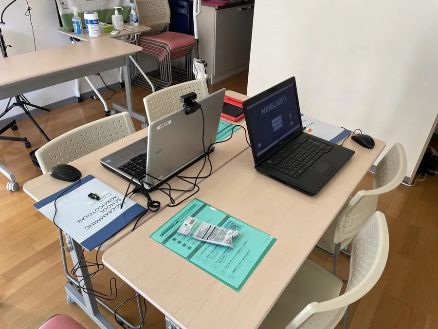
3体験会による入会獲得
本部が持つ独自の仕入れルートと中古パソコンの再生技術により、入会したすべての受講生に再生パソコンをプレゼントしています。魅力的な入会特典が、安定した入会につながっています。
4FC制度の概要
特別な知識や経験は必要ありません。良質な学びを届けていただくため、開校前に研修で運営と指導のノウハウを身につけていただきます。加盟のご契約前には、書類と面接による審査があります。
授業は週末に行うため、副業として加盟いただくことも可能です。体験会の期間は毎週土日、通常は土曜日と第1日曜日が授業日です。平日は、受講生とのご連絡やお問い合わせへの対応が中心になります。
貸し会議室のほか、自社やご自宅の空いているスペースを週末だけ活用して開校することもできます。
いずれも目安です。
参考：学習塾等を含むサービス業の加盟金の平均は191万円、事業開始時の必要資金総額の平均は1,618万円（出典：経済産業省商務情報政策局サービス政策課「フランチャイズ・チェーン事業経営実態調査報告書」平成20年3月）
4FC制度の概要
既存の直営校舎を引き継いで開校することもできます。受講生・スタッフを引き継ぎ、FC校として運営する場合の条件です。
| 1加盟店あたりの合計受講人数 | ロイヤリティ率 |
|---|---|
| 1人〜99人 | 35% |
| 100人〜199人 | 30% |
| 200人以上 | 25% |
※開校月から数えて4か月目以降は、校舎あたりのミニマムロイヤリティとして50,000円を設定しています。
※上記には、校舎の運営に必要な会場使用料・備品購入代・通信費・交通費・人件費などは含まれません。
4FC制度の概要｜直営校舎の引き継ぎ
次の16校は、受講生・スタッフを引き継ぎ、FC校として運営することができます。
北関東
南関東
中部
中国・四国
※説明会の実施日時点の情報です。
※校舎ごとに、別途条件があります。
4FC制度の概要｜直営校舎の引き継ぎ
受講生・スタッフを引き継ぎ、FC校として運営することができます。
※開校月から数えて4か月目以降は、校舎あたりのミニマムロイヤリティとして50,000円を設定しています。
※上記には、校舎の運営に必要な会場使用料・備品購入代・通信費・交通費・人件費などは含まれません。
※校舎ごとに、別途条件があります。
| 1加盟店あたりの合計受講人数 | ロイヤリティ率 |
|---|---|
| 1人〜99人 | 50% |
| 100人〜199人 | 45% |
| 200人以上 | 40% |
4FC制度の概要
ココグラム加盟店様のお客さまが、オンラインスクール「みらいごとラボ」に入会された場合、受講料の30%〜50%が加盟店様へのインセンティブになります。
想定されるケース
校舎への入会以外にも、収益の機会を得ることができます。
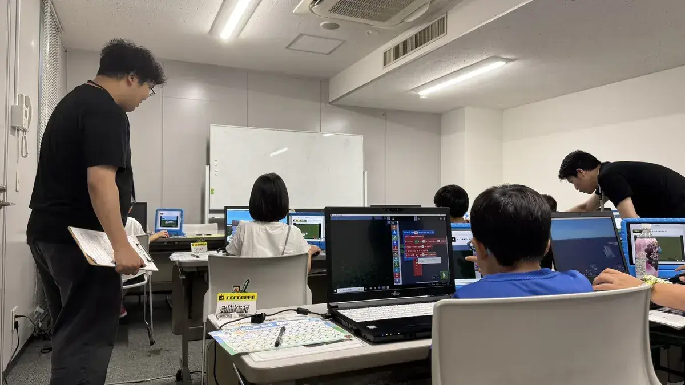
5収支モデル
（例）教室の広さと座席
5m × 6m ＝ 30㎡程度のスペースで
12〜16人が
同時に受講できます
会場の形によって、置ける座席の数は変わります。
授業は1回50分・月2回（隔週）
「× 2」は、A日程とB日程の2つ分です。「× 80%」は、振替で来る受講生の席を残しておくため、定員の8割で計算しています。
5収支モデル
受講料の合計から、ロイヤリティを差し引いた額が加盟店様側の収入です。
| 受講生 | 受講料の合計単価9,500円（税抜） | ロイヤリティ | 加盟店様側の収入 |
|---|---|---|---|
| 30人 | 285,000円 | （35%）99,750円 | 185,250円 |
| 50人 | 475,000円 | （35%）166,250円 | 308,750円 |
| 70人 | 665,000円 | （35%）232,750円 | 432,250円 |
| 100人 | 950,000円 | （30%）285,000円 | 665,000円 |
※記載の集客・入会などの数値は、既存校舎の実績にもとづく想定値であり、新しく開校する校舎の実績や収益を保証するものではありません。
5収支モデル
| 科目 | 条件 | 体験会を行う時期 | 授業のみの時期 |
|---|---|---|---|
| 会場使用料 | 体験会あり：8.5時間 × 8日間 × 1,000円 授業のみ：8.5時間 × 6日間 × 1,000円 | 68,000円 | 51,000円 |
| 人件費 | 体験会あり：7.5時間 × 8日間 × 時給1,300円 × 3〜4名 授業のみ：7.5時間 × 6日間 × 時給1,300円 × 3〜4名 | 234,000〜 312,000円 | 175,500〜 234,000円 |
| その他 | Wi-Fi使用料、備品・消耗品費など | 30,000円 | 30,000円 |
| 合計 | 332,000〜 410,000円 | 256,500〜 315,000円 |
粗利益通常授業期（体験会実施なし・月6日間開講）の場合
※記載の集客・入会などの数値は、既存校舎の実績にもとづく想定値であり、新しく開校する校舎の実績や収益を保証するものではありません。
皆さまと、日本中の子どもたちに
素晴らしい学びを届けられることを、楽しみにしております。
M-Lab株式会社
次のステップはこちら
エントリーフォームはこちら